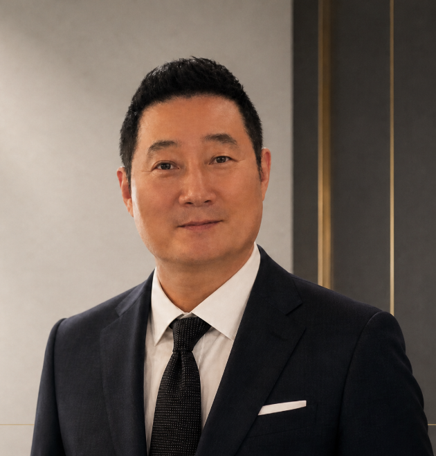

🏭
Manufacturing Innovation
생산성 향상, 제조 비효율 제거, 현장 최적화 및 혁신과제 실행
기술과 경영을 연결하여 제조혁신을 실행하는 파트너
38년 4개월의 산업 현장 경험을 바탕으로 제조혁신, Smart Manufacturing, 기술전략, 설비 신뢰성 및 조직운영 분야의 실행 가능한 해법을 제안합니다.

삼성전자, 삼성상용차, 삼성디스플레이에서 기술개발, 기술관리, 전략기획, 기술인사, 기술기획, 제조혁신 및 생산지원 업무를 수행했습니다.
연구조직과 생산현장을 연결하는 실행형 리더로서 데이터 기반 문제 정의와 현장 중심 개선을 추진해 왔습니다.
현장 운영부터 기술전략까지, 제조 경쟁력을 높이는 전 과정을 지원합니다.
생산성 향상, 제조 비효율 제거, 현장 최적화 및 혁신과제 실행
IoT·PLC·Grafana 기반 상태 가시화와 데이터 기반 CBM 체계
중장기 기술로드맵, 기술투자 검토, 과제 연계와 자원배분
LCC 관점 설비 신뢰성 고도화, 고장 구조 분석 및 예방정비
부품 출고 프로세스, 부외부품, 교체주기와 재고 정합성 개선
연구·엔지니어 조직 운영, 평가체계 정비와 변화관리
공개 페이지에는 최신 이력서에 근거한 수치만 사용했습니다.
설비 고장 구조를 데이터로 진단하고, 개선 우선순위와 예방정비 기반을 강화했습니다.
센싱, 실시간 모니터링, 빅데이터 처리와 정비 의사결정을 연결했습니다.
야간 긴급출고, 부외부품, 교체주기 정보를 분석해 운영 프로세스를 정비했습니다.
개발, 기술관리, 전략기획, 기술인사, 기술기획, 제조혁신과 생산지원을 연속적으로 경험했습니다.
음향사업부 개발팀 · CAD 응용 SW 개발
기술관리 · 도면관리시스템 · PDM 도입
전략기획 · 기술인사 · LCD 연구운영
기술기획 · 제조혁신 · 생산지원
현장 인터뷰와 데이터를 기반으로 생산 저해요소와 개선 우선순위를 도출합니다.
기업 수준에 맞는 IoT, 데이터, CBM 단계별 실행 로드맵을 설계합니다.
고장 구조, 정비체계, 부품 운영을 분석하여 가동 안정화 방안을 수립합니다.
중장기 기술로드맵, 투자 우선순위, 과제 포트폴리오와 조직운영을 지원합니다.
출고, 재고, 교체주기와 비표준 부품 운영 프로세스를 개선합니다.
기술조직 운영과 협업체계, 변화과제의 실행과 정착을 지원합니다.
제조혁신, Smart Manufacturing, 기술전략 및 경영자문에 관한 상담을 환영합니다.